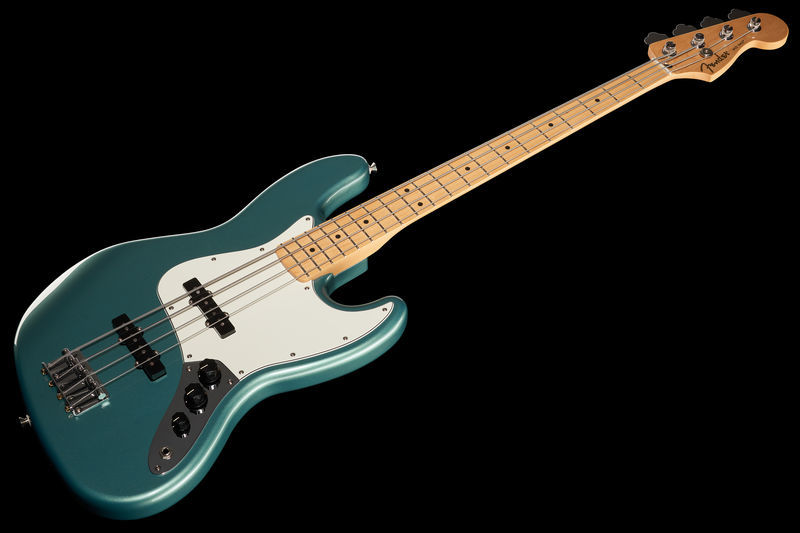

|  |
Fender Jazz Bass MN TPL769€ |
|
Se trata de un bajo de 4 cuerdas de cuerpo de aliso y mástil de arce. Cuenta con un total de 20 trastes y es considerado un bajo de escala larga ya que el mástil es de 864 mm de largo. En cuanto al apartado electrónico cuenta con 2 pastillas New Player Series Alnico 5 de bobina simple Jazz Bass lo que logra un sonido mucho mas calido y profundo enfocado al genero del jazz. Cuenta con 2 controladores de volumen cada uno dedicado a una pastilla y un controlador maestro de tono que intercala entre las pastillas. Las clavijas de afinación son de engranaje abierto.
En Tremolo encontramos todo tipo de productos, donde encontrarás variedad de productos en todas las categorías. Nuestros productos baratos y de una calidad excepcional, producidos con una elaboración hecha a mano de los mejores artesanos de la historia, podrás disfrutar de una experiencia única e inolvidable. Porque la calidad alemana es la que dominará en los conciertos de todos tus artistas favoritos |